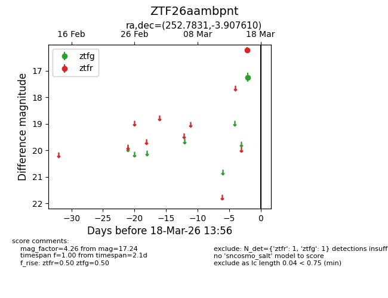
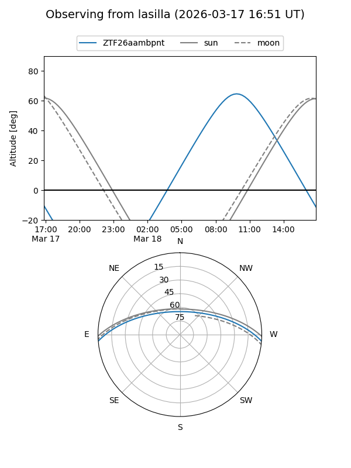
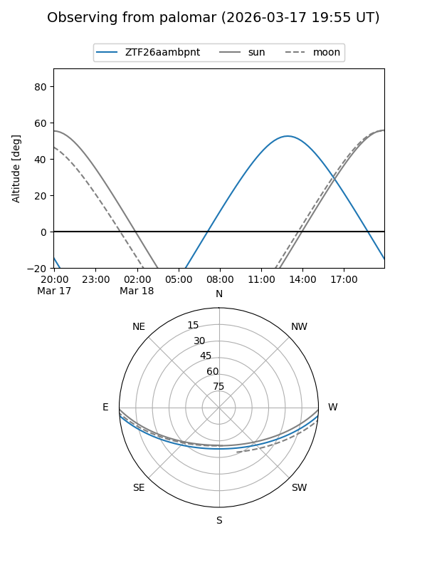

ZTF26aambpnt
Target ZTF26aambpnt at 2026-03-18 13:58
Aliases and brokers:
FINK: link
Lasair: link
ALeRCE: link
alt names
ZTF26aambpnt (ztf,fink_ztf)
Coordinates:
equatorial (ra, dec) = 252.7831,-3.90761
equatorial (HMS+DMS) = 16:51:07.94,-03:54:27.40
galactic (l, b) = (14.4459,+24.45071)
Flags:
Photometry:
last ztfg=17.24, ztfr=16.21
1 ztfg, 1 ztfr detections
Lightcurve

Visibility


Additional plots